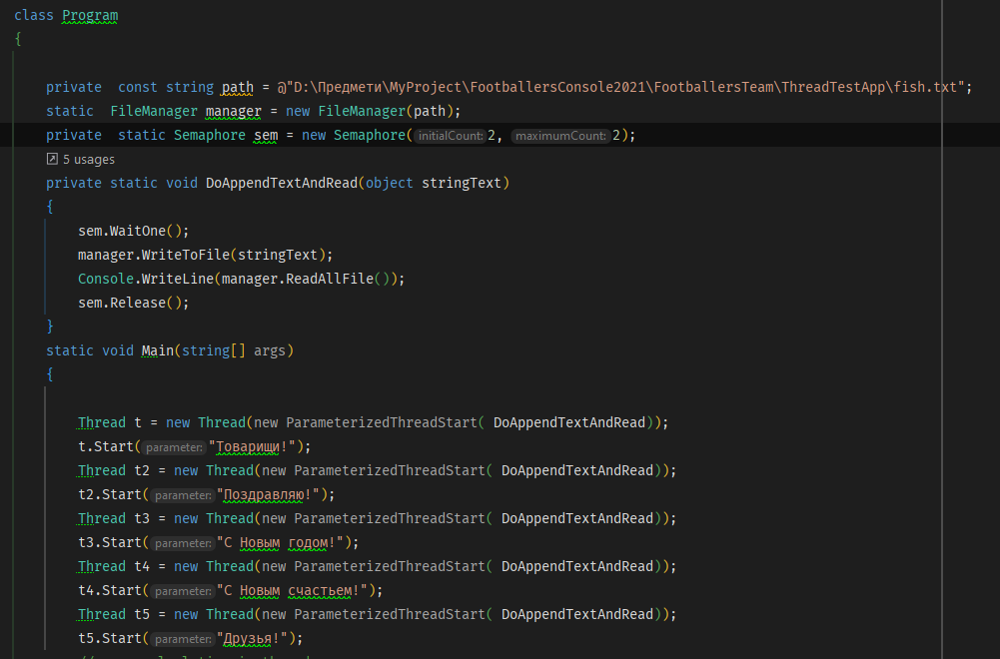

Тема: ПОТОКИ.
Мета :придбати практичні навички роботи з потоками. Постановка задачі: В окремому проекті виконати завдання пункту №3Місце розташування проекту.
Середовище розробки : Rider
1)Знайти суму чисел від 1 до 100000000.
Програма для розрахунку

Час виконання
2) Скопіюйте програмний код обчислення ще 2 рази.
Програма для розрахунку

3) Визначте час виконання циклів за допомогою властивості TotalMilliseconds у об'єкта DateTime.
Час виконання
4) Зробіть 2 додаткових потоки, в кожному з яких буде виконуватися той же цикл.
5) В основному потоці закоментуйте 2 цикли, щоб залишився тільки один. Таким чином, кожен з 3-х циклів, буде виконуватися в своєму потоці.
Код після додавання двох потоків
6) Визначте час виконання в цьому випадку.
Час виконання після додавання двох потоків
1) Створіть клас, конструктор якого буде як параметр приймати об'єкт файлу.
2) Додайте метод, який буде зчитувати текст з файлу і повертати готовий рядок.
3) Додайте метод, який буде записувати в файл переданий в параметрах рядок.
4) Створіть 2 потоки, які повинні будуть одночасно записуватись в файл, використовуючи екземпляр створеного Вами класу, деякий рядок (кожен з потоків повинен спробувати записати свій рядок), а після виводити в консоль результат їх записи.
5) Досягти того, щоб сталася помилка. Наприклад, потік записав «Рядок 1», а в консолі в цьому потоці вивелося «Рядок 2» через те, що в цей самий момент інший потік записав в файл «Рядок 2».
6) Синхронізуйте потоки, щоб цієї помилки більше не було.
Для того що б синхронізувати використаємо lock

Після цього цієї проблеми не буде
Додамо м'ютекс
Після цього цієї проблеми не буде
Візьміть за основу попередню вправу. І додайте ще 3 аналогічних існуючим потоки.
2) Приберіть м'ютекси і підключіть семафор, який повинен підпускати до файлу одночасно тільки 2 потоку.
3) Проаналізуйте отриману різницю в порівнянні з варіантом на м'ютексах.
Очікувано отримаємо наступне виключення
Щоб вирішити цю проблемо змінимо перший параметр семафора на 1
Отримаємо правильний результат в йьому випадку
У реальності в процесі роботи буде відбуватися перемикання між потоками, і значення змінної x стає непередбачуваним.
Оператор lock визначає блок коду, всередині якого весь код блокується і стає недоступним для інших потоків до завершення роботи поточного потоку.
Поряд з оператором lock для синхронізації потоків ми можемо використовувати монітори, представлені класом System.Threading.Monitor. Фактично конструкція оператора lock інкапсулює в собі синтаксис використання моніторів.
Семафор подібний м'ютексів, за винятком того, що він надає одночасний доступ до загального ресурсу не одному, а кільком потокам. Тому семафор придатний для синхронізації цілого ряду ресурсів. Семафор управляє доступом до загального ресурсу, використовуючи для цієї мети лічильник. Якщо значення лічильника більше нуля,то доступ до ресурсу дозволений. А якщо це значення дорівнює нулю, то доступ до ресурсу заборонено. За допомогою лічильника ведеться підрахунок кількості дозволів. Отже, для доступу до ресурсу потік повинен отримати дозвіл від семафора.